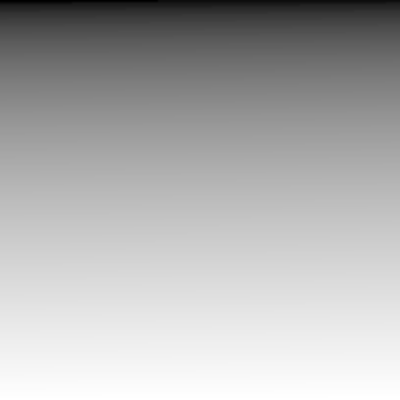
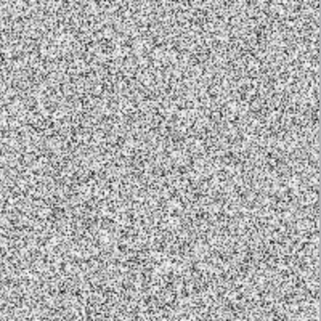
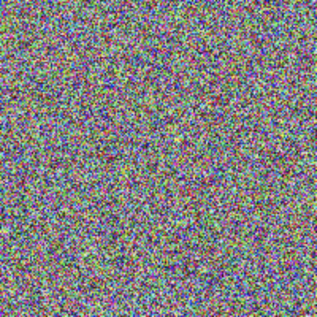
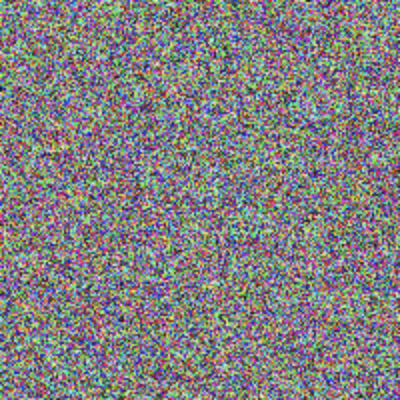

An image can be created from numerical data using the Core Graphics and Accelerate frameworks. The sections below demonstrate how to create a gray scale image from normalized data and color images from RGB data.
The function shown below creates a gray scale image from an array using CGContext.
import Accelerate
/// Create a gray scale image from an array using CGContext.
/// - Parameters:
/// - data: Array contains values from 0 to 1. Assume size of array is width x height.
/// - width: Width of the generated image.
/// - height: Height of the generated image.
/// - Returns: A gray scale CGImage.
func makeGrayImage(from data: [Float], width: Int, height: Int) -> CGImage {
// Convert array to gray scale RGB values
// Note gray scale RGB values are all same number such as 255, 255, 255 and 80, 80, 80
let dataGray = vDSP.multiply(255, data)
// Convert array to UInt8
var gray = vDSP.floatingPointToInteger(dataGray, integerType: UInt8.self, rounding: .towardNearestInteger)
// Create image
let colorSpace = CGColorSpace(name: CGColorSpace.linearGray)!
let bitmapInfo = CGImageAlphaInfo.none.rawValue
let context = CGContext(data: &gray,
width: width,
height: height,
bitsPerComponent: 8,
bytesPerRow: width,
space: colorSpace,
bitmapInfo: bitmapInfo)!
let image = context.makeImage()!
return image
}
To use this function, provide the width and height of the desired image along with an array of data values. In this example, the data is a linear ramp of values from 0 to 1.
// Define width and height of image
let width = 200
let height = 200
// Gray scale image from data that is a linear ramp from 0 to 1
let dataLinear = vDSP.ramp(in: Float.zero...1, count: width * height)
let grayImage1 = makeGrayImage(from: dataLinear, width: width, height: height)

An array of random data from 0 to 1 can also be used to generate a gray scale image as demonstrated below.
// Define width and height of image
let width = 200
let height = 200
// Gray scale image using random data that is from 0 to 1
var dataRandom = [Float](repeating: 0, count: width * height)
for i in 0..<dataRandom.count {
dataRandom[i] = .random(in: 0...1)
}
let grayImage2 = makeGrayImage(from: dataRandom, width: width, height: height)

This function creates a color image from an array of RGBA values using CGContext.
import Accelerate
/// Create an image from an array of RGBA values using CGContext.
/// - Parameters:
/// - data: Array contains RGBA values from 0 to 255. Each group of four values is R, G, B, A. The alpha value is ignored. Assume size of array is width x height x 4.
/// - width: Width of the generated image.
/// - height: Height of the generated image.
/// - Returns: A color CGImage.
func makeRGBAImage(from data: [Float], width: Int, height: Int) -> CGImage {
// Convert array to UInt8
var rgb = vDSP.floatingPointToInteger(data, integerType: UInt8.self, rounding: .towardNearestInteger)
// Create image
let colorSpace = CGColorSpaceCreateDeviceRGB()
let bitmapInfo = CGImageAlphaInfo.noneSkipLast.rawValue
let context = CGContext(data: &rgb,
width: width,
height: height,
bitsPerComponent: 8,
bytesPerRow: width * 4,
space: colorSpace,
bitmapInfo: bitmapInfo)!
let image = context.makeImage()!
return image
}
The size of the array passed to the function is width × height × 4 because each group of four values represents R, G, B, and A channels.
// Define width and height of image
let width = 200
let height = 200
// Color image from RGBA data that is random numbers from 0 to 255
// where each group of four values is R, G, B, A
var dataRGB4 = [Float](repeating: 0, count: width * height * 4)
for i in 0..<dataRGB4.count {
dataRGB4[i] = .random(in: 0...255)
}
let rgbImage1 = makeRGBAImage(from: dataRGB4, width: width, height: height)

The last example creates a color image from an array of RGB values using vImage. Notice the size of the array is width × height × 3 because each group of 3 values is the R, G, B channels.
import Accelerate
/// Create an image from an array of RGB values using vImage.
/// - Parameters:
/// - data: Array containing RGB values from 0 to 255. Each group of three values is R, G, B. Assume size of array is width x height x 3.
/// - width: Width of the generated image.
/// - height: Height of the generated image.
/// - Returns: A color CGImage.
func makeRGBImage(from data: [Float], width: Int, height: Int) -> CGImage {
// Convert array to UInt8
let rgb = vDSP.floatingPointToInteger(data, integerType: UInt8.self, rounding: .towardNearestInteger)
// Create image
let buffer = vImage.PixelBuffer(
pixelValues: rgb,
size: .init(width: width, height: height),
pixelFormat: vImage.Interleaved8x3.self
)
let format = vImage_CGImageFormat(
bitsPerComponent: 8,
bitsPerPixel: 8 * 3,
colorSpace: CGColorSpaceCreateDeviceRGB(),
bitmapInfo: CGBitmapInfo(rawValue: CGImageAlphaInfo.none.rawValue)
)!
let image = buffer.makeCGImage(cgImageFormat: format)!
return image
}
// Define width and height of image
let width = 200
let height = 200
// Color image from RGB data that is random numbers from 0 to 255
// where each group of three values is R, G, B
var dataRGB3 = [Float](repeating: 0, count: width * height * 3)
for i in 0..<dataRGB3.count {
dataRGB3[i] = .random(in: 0...255)
}
let rgbImage2 = makeRGBImage(from: dataRGB3, width: width, height: height)

Swift Programming for macOS © 2023
Built by Gavin Wiggins